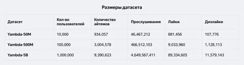

В открытом доступе появился Yandex Music Billion-Interactions Dataset (Yambda) — один из крупнейших в мире датасетов в области рекомендательных систем. В этом посте рассказываем, зачем он нужен и какие у него ключевые особенности.
В последние годы рекомендации вышли на плато по сравнению с более быстро развивающимся областями, такими как LLM. Исследователям недоступны терабайты данных, которые нужны для развития рекомендательных систем, а коммерческие платформы редко делятся данными. Поэтому приходится использовать устаревшие и маленькие наборы. Модели, обученные на таких данных, теряют эффективность при масштабировании.
Существующие доступные датасеты, такие как MovieLens, Netflix Prize dataset, Amazon Reviews, Music4All-Onion, Steam и несколько других имеют ряд недостатков. Например, сравнительно небольшой размер делает их нерепрезентативным для коммерческих масштабов, а фокус на явных сигналах ограничивает полезность для моделирования реальных последовательных взаимодействий.
Чтобы решить эти проблемы и дать исследователям больше возможностей для разработки и тестирования новых гипотез в рекомендациях, исследователи Яндекса выложили в опенсорс свой датасет Yambda.
Ключевые особенности Yambda:
— Содержит 4,79 млрд обезличенных взаимодействий пользователей с музыкальными треками в Яндекс Музыке.
— Есть три версии: полная (5 млрд событий) и уменьшенные (500 млн и 50 млн
событий).
— Включает два основных типа взаимодействий: неявную обратную связь (прослушивания) и явную обратную связь (лайки, дизлайки, анлайки и андизлайки).
— Для большинства треков есть нейросетевые вектора, сгенерированные с помощью свёрточной нейронной сети (CNN), что позволяет учитывать некоторые характеристики музыкальных треков.
— Включены анонимизированные признаки метаданных треков, такие как длительность, содержание вложений, исполнитель и альбом.
— Каждое событие помечено флагом is_organic, который позволяет различать органические действия пользователей и действия, вызванные рекомендациями алгоритма.
— Все события имеют временные метки, что позволяет проводить анализ временных последовательностей и оценивать алгоритмы в условиях, приближённых к реальным.
— Данные распределены в формате Apache Parquet, что обеспечивает совместимость с распределёнными системами обработки данных (например, Hadoop, Spark) и современными аналитическими инструментами (например, Polars, Pandas).
Методы оценки
В отличие от метода Leave-One-Out (LOO), который исключает последнее положительное взаимодействие пользователя из обучающей выборки для предсказания, Yambda-5B использует глобальный временной сплит (Global Temporal Split, GTS). Преимущество GTS в том, что он сохраняет временную последовательность событий, предотвращая нарушение временных зависимостей между тренировочным и тестовым наборами данных. Это позволяет более точно оценить, как модель будет работать в реальных условиях, когда доступ к будущим данным ограничен или невозможен.
Вместе с датасетом представлены baseline-алгоритмы (MostPop, DecayPop, ItemKNN, iALS, BPR, SANSA, SASRec). Они служат отправной точкой для сравнения эффективности новых подходов в области рекомендательных систем.
Используются следующие метрики:
— NDCG@k (Normalized Discounted Cumulative Gain) — оценивает качество ранжирования рекомендаций.
— Recall@k — измеряет способность алгоритма генерировать релевантные рекомендации из общего набора возможных рекомендаций.
— Coverage@k — показывает, насколько широко представлен каталог элементов в рекомендации.
Датасет и код для оценочных бейзлайнов уже доступны на Hugging Face, а статья — на arXiv.
UPD: Появилось видео выступления Саши Плошкина на ACM RecSys — оставим его здесь для истории
Статью подготовили
@RecSysChannel
